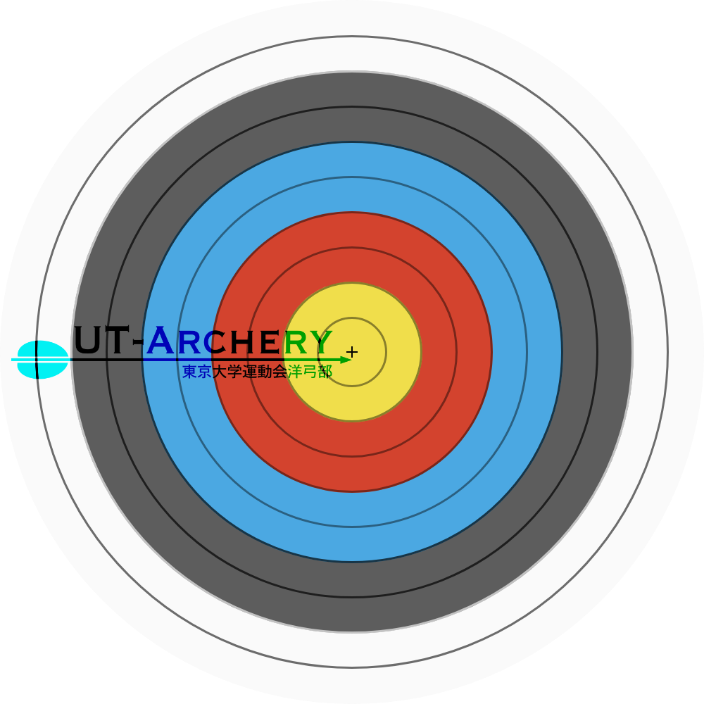
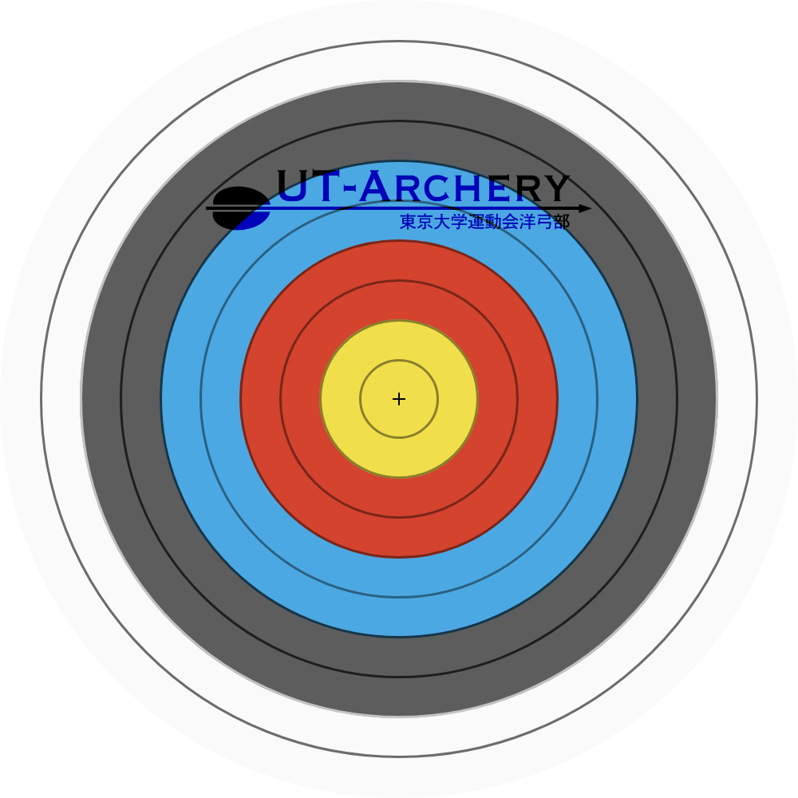
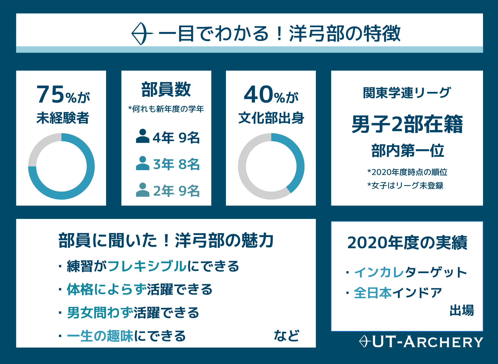
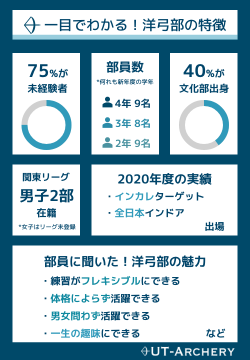

ようこそ！
東大洋弓部は運動会所属の部活です。
個人競技のため、自分に合わせたペースで練習できるのが魅力的ですが、全員が一丸となってアーチェリーの上達という一つの目標に取り組んでいます。
男女を問わず活躍の場があり、関東リーグの上位を狙い切磋琢磨しています。
洋弓部を知る
部員数など洋弓部のデータをまとめてみました！


洋弓部をもっと知る
アーチェリーは初めて、という方にお読みいただきたいコンテンツや、履修のお役立ち情報などをご用意しました。ぜひご覧ください！
＊クリックすると各コンテンツに遷移します。
洋弓部って？
東大には様々な運動会部活があります。洋弓部にはどんな特色があるのでしょうか。
アーチェリーって？
アーチェリーをオリンピックなどで見たことがある方もいらっしゃるかもしれません。実はオリンピックの形式以外にも様々な競技があります。
新入生の一年
洋弓部に入部したらどんな生活を過ごすのか、その概要をお伝えします。自分が洋弓部で過ごすイメージがわくかも。
Q & A
洋弓部やアーチェリーにまつわる色々な質問にお答えします！部の雰囲気など、気になることが知れますよ。
履修のすゝめ
入学おめでとうございます。大学の授業形式は高校と大きく違い、東大特有のシステムもあります。これを読んで履修の荒波を乗りこなそう。
おすすめコンテンツ
過去のパンフレット、ポスターなど、新入生向けの情報を集めました。ぜひご覧ください！
洋弓部に連絡する
ご質問やさらに知りたいことがある方は、お気軽にメールやDMまでご連絡ください！


*メールアドレスは、"○"を"@"に変えてください。